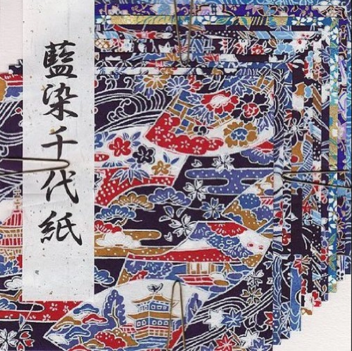

Origami Paper
Lots of printable origami paper to choose from! Scroll down to find the design or color you want and click on Download to download the pdf file. Each printable origami paper is 7x7. If you print on a regular 8.5x11 paper you will need scissors to cut it out. Have fun and don't forget to email us your masterpiece so we can show it off here! All files are in pdf format. If your computer can't open these, you will need to download Adobe Reader.
1. Kami Paper for Beginners
Kami is probably the most common and well-known kind of origami paper. It’s usually white on the back with a solid colour or pattern on the front and a smooth texture. Kami is quite thin, usually around 60 to 63 gsm and it comes is a huge variety of different colours and patterns. This paper usually comes in 15cm x 15cm squares and can be used for almost any kind of origami.

The word “kami” means paper in Japanese. You can also get what’s known as Duo Kami which is just like regular kami except there’s a different colour on each side. Instead of a colour on the front and white on the back both the front and back are different colours.
2 Washi and Yuzen
Washi is a traditional Japanese paper that’s made by hand using long plant fibres. This paper has a very unique Japanese look and feel usually with traditional Japanese designs.
It’s very thick paper and has a soft and rich feel almost like fabric. You may also come across Chiyogami or Yuzen paper.
This is a type of washi paper that has very vibrant patterns with gold colours mixed in. This paper is used to make traditional Japanese Hina dolls.
See more beautiful ART